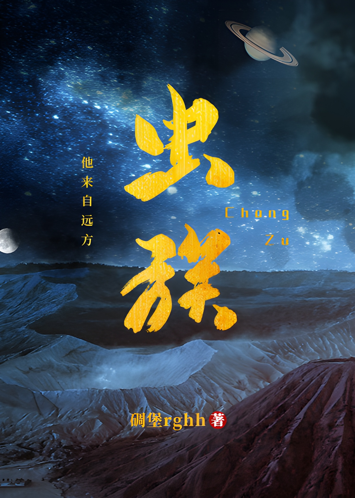

Vengo de un lugar lejano,
Mirando hacia arriba, las estrellas cambian sus patrones, y mirando hacia abajo, hay montañas y llanuras.
En el vasto e ilimitado universo, ella se desvanece silenciosamente cuando no me doy cuenta,
La llamas la Estrella Azul, la cual se extinguió hace mucho tiempo, pero yo la llamo hogar…
En resumen, esta es la historia de los humanos de la Tierra que transmigraron a los notorios zerg interestelares masculinos, luchando por sobrevivir en un mundo diferente.